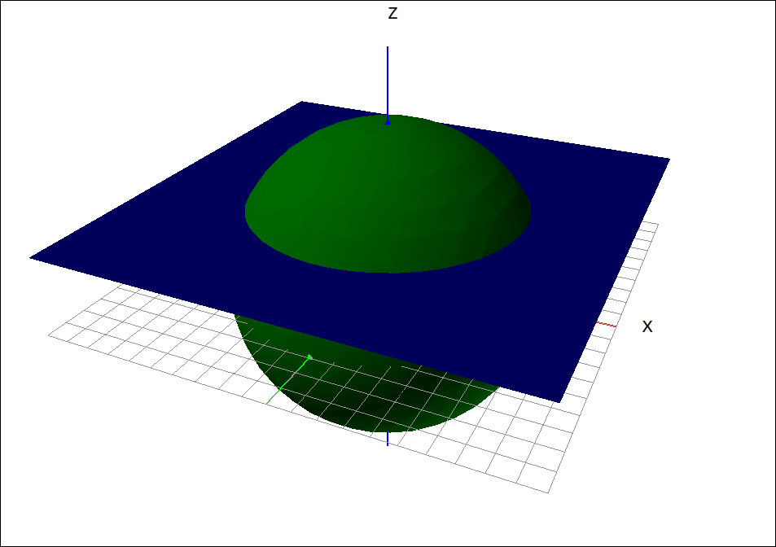
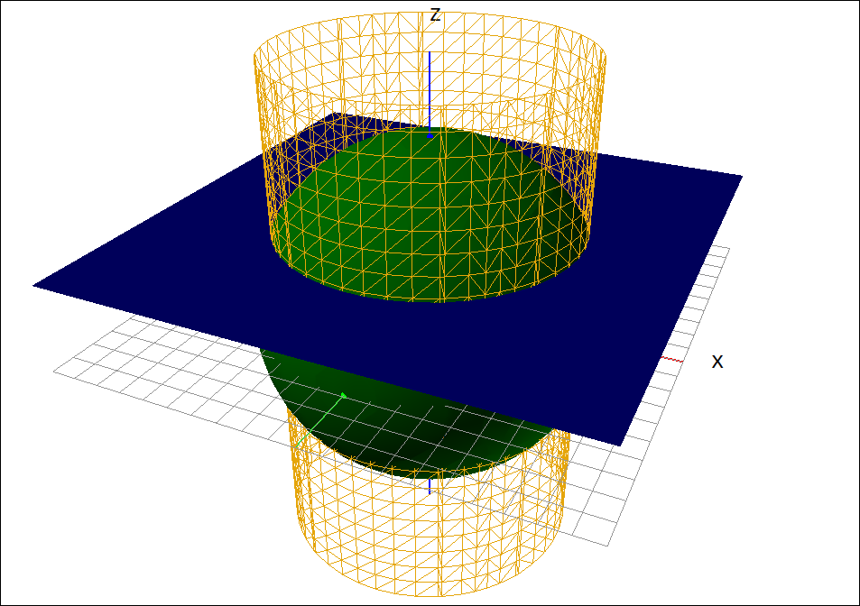

Surface Area#
Discussion & Definitions#
The formula for the area of a surface over a domain D is not difficult to derive and it is very similar to the derivation of the arc-length of a curve, as is the result. We will leave the derivation to your textbook.
Theorem: Surface Area
The area of a surface \(z = f(x, y)\) over a region R where both partial derivatives \(f_x\) and \(f_y\) are continuous is,
Example: Surface Area of a Portion of a Sphere#
In this exercise we will find the surface area of the portion of the sphere \(x^2 + y^2 + z^2 = 4\) that lies above the plane \(z = 1.\)
CLAE#
Input the expression for the surface, equal to 0,
x^2 + y^2 + z^2 - 4
Also input 1. Graph both of these in the 3D graphics window.

\(x^2 + y^2 + z^2 = 4\) and \(z = 1\)#
So the surface area we want is the cap on the top of the sphere. To get the bounds on this surface we need to find the intersection of the two surfaces. Substituting \(z = 1\) into \(x^2 + y^2 + z^2 = 4\) gives us \(x^2 + y^2 = 3\) which is a circle of radius \(\sqrt{3}\) centered at the origin. Input,
x^2 + y^2 - 3
Graph this in the 3D window, change its type to Implicit Relationship and its plot to grid.

\(x^2 + y^2 + z^2 = 4\) and \(z = 1\)#
Now we proceed with the calculations. Since we are looking at the top half of the sphere we can rewrite the implicit relationship as,
then using the derivative option,
So our integrand is,
The region that we are integrating over is a circle (disk) which would suggest using polar coordinates. We will first try rectangular coordinates. Approaching this as a Type I region, the y bounds would be \(- \sqrt{3 - x^{2}}\) to \(\sqrt{3 - x^{2}}\) and the x bounds would be \(- \sqrt{3}\) to \(\sqrt{3}.\) So the integral would be,
If we try this in CLAE it will return the integral, unsolved. If we take the time to convert this to polar coordinates, as we thought above, we get an integrand of,
and a polar integral of,
This is an easy substitution that we could do by hand but inputting this into CLAE and taking the double integral gives us the result of \(4\pi.\)
Maxima#
We can also solve the polar integral in Maxima but additionally, Maxima is powerful enough to calculate the double integral given in rectangular coordinates. Inputting,
integrate(integrate(2*sqrt(-1/(x**2 + y**2 - 4)), y, -sqrt(3 - x**2), sqrt(3 - x**2)), x, -sqrt(3), sqrt(3));
will return the value of \(4\pi.\)